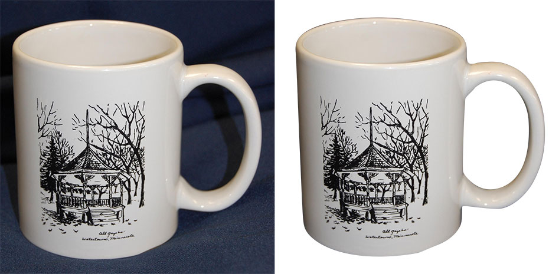

<div class="serviceForImg">
    <p class="servclippara">Clipping path, in simple terms, refers to a close vector shape or a "cut out" pattern that is used in order to remove or displace the existing background of a selected image while still managing to keep the item in the file.</p>
    <p class="servclippara">We offers clipping path , image background removal service at very low rates. Compare our competitors and our quality level and you will be surprised. Why pay more for less?</p>
    <p class="servclippara">The cost of handmade Clipping Path using pen tool ranges from $0.5 to $7. But the cost depends on the complexity of the images and the amount of images.</p>
    <div class="mainclipImg">
        <h1>COMPLEX CLIPPING PATH</h1>
        <p class="clipservPrice">7.9$</p>
        
        
        <p>is done on items or products prototyping complex shapes that require maximum 60 minutes (1 hour) for hand-drawing and knocking out background with maximum accuracy. Often basic shaped images with numerous embedded transparencies (holes) require complex image editing service.</p>
        <div class="corr"> 
            <div>Example: </div>
            <div>
                <ul>
                    <li>Vehicle: Car, Bi-cycle, Motor Bike</li>
                    <li>Fashion Item:  Heavy ornaments, Table, Chair</li>
                    <li>Beverage: Drop of water, Juice or soft drinks</li>
                    <li>Random: Hair, Fur</li>
                </ul>
            </div>
        </div>
    </div>
    <div class="mainclipImg">
        <h1>SIMPLE</h1>
        <p class="clipservPrice">1.35$</p>

        
        

        <p>clipping Path is the elementary option to remove background and knockout an image from its original form. Manual clipping path ensures good quality outline service than those processes applied in graphic platform. We offer 100 % manual or handmade Clipping Path service.</p>
    </div>
    <div class="mainclipImg">
        <h1>BASIC</h1>
        <p class="clipservPrice">0.59$</p>

        
        

        <p>is the elementary option to remove background and knockout an image from its original form. Manual clipping path ensures good quality outline service than those processes applied in graphic platform. We offer 100 % manual or handmade Clipping Path service.</p>
    </div>

    <div class="corr">
        <h3>Our Process – How does it work?</h3>
        <ul>
            <li>Step 1 – Upload your images</li>
            <li>Step 2 – We analyze the complexity</li>
            <li>Step 3 – We tell you the rate for the whole bundle</li>
        </ul>
    </div>

    <div class="corr">
        <h3>Try before order!</h3>
        <p>Expertwebwork offers you trial of 2 Clipping Path images to show you our outstanding quality, low cost, and speed of turnaround time. You can send us any type of file format such as TIF, EPS, JPG, PSD etc. We have FTP and Dropbox account to transfer big size file.</p>
    </div>

    <h1>Request for a Quote</h1>
</div>
{% include sec_discuss_withoutcontainer.html %}
